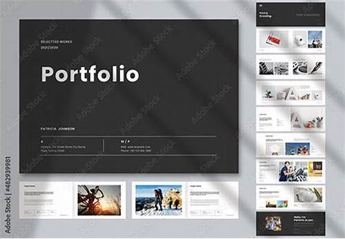

Les principes de base du projet Web
Une page Web de portfolio
Les principes de base du projet web sont des directives essentielles qui aident à structurer et à organiser le contenu de manière efficace et esthétique
Un projet web réussi repose sur une planification soignée, une bonne exécution technique et une attention constante à l’expérience utilisateur. En suivant ces principes de base, vous pourrez développer un site web efficace, fonctionnel et apprécié de ses utilisateurs.

Une page web de portfolio est un site personnel utilisé par des professionnels, en particulier dans les domaines créatifs et techniques, pour présenter leurs travaux, compétences, projets et expériences. C'est un outil essentiel pour mettre en valeur son expertise, ses réalisations, et sa personnalité, tout en offrant un moyen facile pour les recruteurs, clients ou partenaires potentiels de découvrir ce que vous savez faire.
